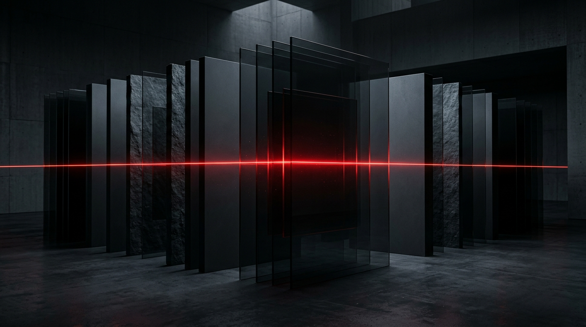

KTU AI
RAG-Based Intelligent Academic Assistant
An academic assistant in development using retrieval-augmented generation to help KTU students explore syllabus-grounded learning resources. Built with a Python FastAPI backend, Qdrant Cloud vector search, and a modern React interface.
